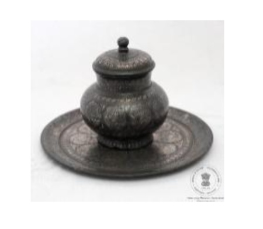

🔇 Is bhasha me is vastu ka audio abhi uplabdh nahi hai.
अभिग्रहण संख्या: XXXIII-57 पेयजल पात्र एवं तश्तरी

अभिग्रहण संख्या: XXXIII-57
यह पेयजल पात्र उभरे हुए गोल आधार, गोलाकार शरीर और संकरी गर्दन वाला है। इस पर पुष्प डंठल तथा पत्तियों की सुंदर आकृतियाँ बनी हैं। इसका उभरा हुआ ढक्कन घुंडी सहित है, जिस पर पंखुड़ियों और पत्तियों के अलंकरण बने हैं तथा उनमें चाँदी की जड़ाई की गई है। इसके साथ गोल तश्तरी है। तश्तरी के मध्य भाग में पुष्प की आकृति है तथा उसके चारों ओर पत्तियाँ, पुष्प डंठल, पुष्प लता और साधारण लता की आकृतियाँ संकेंद्रित वृत्तों में बनी हैं। इन सभी अलंकरणों में चाँदी की जड़ाई की गई है। तश्तरी के किनारे पर लहरदार रेखा तथा पत्तियों का अलंकरण है। इसके साथ रखा गिलास उभरे हुए गोल आधार वाला है, जिस पर टेढ़ी-मेढ़ी रेखाओं से बनी सीधी खड़ी रेखाओं का अलंकरण किया गया है। यह कलाकृति भारत के कर्नाटक राज्य के बीदर की प्रसिद्ध धातु शिल्प परंपरा से संबंधित है। यह पेयजल पात्र और तश्तरी ईस्वी 19वीं शताब्दी में निर्मित किए गए थे।
Acc No: XXXIII-57 Drinking Pot with Tray
Acc No: XXXIII-57
A drinking vessel with a raised circular base, spherical body, and narrow neck, decorated with floral stalks and leaf motifs. The convex lid with a bud knob features silver inlay work of petals and leaves. The circular tray has a central flower motif surrounded by concentric rings with inlaid silver leaves, floral sprays, creepers, and geometric scrolls. The tumbler features vertical lines emerging from zig-zag lines resting on a raised circular base. Originating from Bidar, Karnataka, India, this drinking vessel and tray set dates back to the 19th century CE.
2. ట్రేతో కూడిన తాగునీటి కుండ
Acc No: XXXIII-57
ఈ పానపాత్రకు (Drinking pot ) ఎత్తైన గుండ్రని అడుగుభాగం, గుండ్రని ఆకారం, మరియు పువ్వు కాడ నమూనా, ఆకుల డిజైన్లతో కూడిన గుండ్రని మెడ ఉన్నాయి. గుండ్రని పిడితో ఉన్న ఎత్తైన మూతపై వెండి పొదుగుతో కూడిన రేకుల మరియు ఆకుల డిజైన్లు ఉన్నాయి. పువ్వుతో ఉన్న గుండ్రని పళ్ళెం మధ్య వృత్తంలో ఉండగా, అదే వృత్తంలో వెండి పొదుగుతో ఆకు, పువ్వు కాడ, పువ్వు తీగ, మరియు సాధారణ తీగ డిజైన్లు ఉన్నాయి. ఈ డిజైన్లను వెండితో పొదిగారు. పళ్ళెం పట్టీపై అలల వంటి ఫ్రెంచ్ గీతలు మరియు ఆకులు ఉన్నాయి; గ్లాసుపై వంకర గీతలతో కూడిన నిటారైన గీతలు మరియు ఎత్తైన గుండ్రని అడుగుభాగం ఉన్నాయి. ఈ వస్తువు భారతదేశంలోని కర్ణాటక రాష్ట్రం, బీదర్కు చెందినది. ఈ పళ్ళెం పాత్ర క్రీ.శ. 19వ శతాబ్దంలో తయారు చేయబడింది.
۲. پانی کا جگ ٹرے کے ساتھ
اندراج نمبر: XXXIII-57
یہ پانی پینے کا برتن گول جسم، بلند گول بنیاد اور خوب صورت گردن پر مشتمل ہے، جس پر پھولوں کی شاخوں اور پتوں کے دلکش نقش نہایت مہارت سے بنائے گئے ہیں۔ اس کا ابھرا ہوا ڈھکن ایک خوب صورت دستے سے مزین ہے، جس پر پنکھڑیوں اور پتوں کے نقش چاندی کی نفیس جڑائی سے آراستہ ہیں۔ گول ٹرے کے مرکزی حصے میں پھول کا نقش نمایاں ہے، جبکہ اس کے گرد دائرہ وار انداز میں پتوں، پھولوں کی شاخوں، بیل بوٹوں اور سادہ بیلوں کے خوب صورت نقش چاندی کی جڑائی سے مزین کیے گئے ہیں۔ یہ نفیس نقش و نگار برتن کی خوب صورتی اور کاریگروں کی مہارت کا اظہار کرتے ہیں۔ ٹرے کے کناروں پر لہردار لکیروں کے ساتھ پتوں کے نقش بنائے گئے ہیں۔ گلاس پر عمودی لکیریں اور ٹیڑھی میڑھی لکیروں کے خوب صورت نقش موجود ہیں، جبکہ اس کی بنیاد بھی گول اور ابھری ہوئی ہے۔ یہ فن بیدر، کرناٹک، ہندوستان کی بیدری فن کاری سے تعلق رکھتا ہے۔ یہ پانی پینے کا برتن اور ٹرے انیسویں صدی عیسوی میں تیار کیے گئے تھے۔
অ্যাক্সেস নম্বর: XXXIII-57 ট্রে-সহ পানপাত্র
अभिग्रहण संख्या: XXXIII-57
পানপাত্রটির ভিত্তিদেশ গোলাকার ও কিছুটা উঁচু; এর মূল অংশ ও গ্রীবা গোলাকার আকৃতির এবং এতে ফুলের ডাঁটা ও পাতার নকশা রয়েছে। পাত্রের উত্তল ঢাকনাটিতে একটি হাতল আছে এবং এতে পাপড়ি ও পাতার নকশার সাথে রুপার কাজ করা হয়েছে। গোলাকার ট্রে-টির কেন্দ্রে একটি ফুলের নকশা রয়েছে; এর বাইরের বৃত্তাকার বলয়গুলোতে পাতা, ফুলের ডাঁটা, লতা ও সাধারণ লতার নকশা রয়েছে, যাতে রুপার কাজ করা হয়েছে। নকশাগুলো রুপা দিয়ে ফুটিয়ে তোলা হয়েছে। ট্রে-র কিনারায় ঢেউখেলানো রেখা ও পাতার নকশা রয়েছে; পানপাত্রের গায়ে আঁকাবাঁকা রেখা থেকে ওপরের দিকে উঠে যাওয়া লম্বালম্বি রেখার বিন্যাস এবং নিচে একটি গোলাকার উঁচু ভিত্তিদেশ দেখা যায়। এই শিল্পকর্মটি ভারতের কর্ণাটক রাজ্যের বিদার অঞ্চলের। ট্রে-সহ এই পানপাত্রটি ঊনবিংশ শতাব্দীতে তৈরি।
Acc No: XXXIII-57 ટ્રે સાથે પીવાના વાસણ
अभिग्रहण संख्या: XXXIII-57
પીવાના વાસણમાં ફૂલોની દાંડીની પેટર્ન અને પાંદડાની ડિઝાઇન સાથે ગોળાકાર શરીર અને ગરદન ઊભા કરવામાં આવ્યા છે. કાંટાવાળા કન્વેક્સના ઢાંકણમાં પાંખડી અને પાંદડાવાળી ડિઝાઇન હોય છે જે ચાંદીની જડતર સાથે હોય છે. ફૂલ સાથેની ગોળાકાર ટ્રે મધ્ય વર્તુળમાં હોય છે અને પાંદડાંવાળું, ફૂલોની દાંડી, ફ્લાવર વેલો અને ચાંદીના જડતરવાળા કેન્દ્રિત વર્તુળોમાં સરળ વણાટની ડિઝાઇન. ડિઝાઇન ચાંદીથી સેટ કરવામાં આવે છે. બેન્ડ પર પાંદડાઓ સાથે ફ્રેન્ચમાં ઊંચુંનીચું થતું રેખા ટ્રે કરો; ટમ્બલર એ વાંકોચૂંકો રેખાઓ અને ગોળાકાર ઊભા આધારથી ઊભી રેખાઓ છે. પદાર્થનું કલા સ્વરૂપ બીદર, કર્ણાટક, ભારતનું છે. ટ્રે સાથેનું પોટ 19 મી સદી સીઇ દરમિયાન બનાવવામાં આવે છે.
Acc No: XXXIII-57 ತಟ್ಟೆಯೊಂದಿಗಿನ ಕುಡಿಯುವ ನೀರಿನ ಪಾತ್ರೆ
अभिग्रहण संख्या: XXXIII-57
ಉಬ್ಬಿದ ವೃತ್ತಾಕಾರದ ತಳಭಾಗ, ಗೋಲಾಕಾರದ ಕಾಯ ಮತ್ತು ಕುತ್ತಿಗೆಯನ್ನು ಹೊಂದಿರುವ ಕುಡಿಯುವ ನೀರಿನ ಪಾತ್ರೆ, ಇದರ ಮೇಲೆ ಹೂವಿನ ತೊಟ್ಟು ಮತ್ತು ಎಲೆಗಳ ವಿನ್ಯಾಸಗಳಿವೆ. ಮೊಗ್ಗು ಆಕಾರದ ಹಿಡಿಕೆಯನ್ನು ಹೊಂದಿರುವ ಉಬ್ಬು ಮುಚ್ಚಳದ ಮೇಲೆ ಬೆಳ್ಳಿಯ ಕುಸುರಿ ಕೆಲಸ ಮಾಡಿರುವ ಪುಷ್ಪದಳ ಮತ್ತು ಎಲೆಗಳ ವಿನ್ಯಾಸಗಳಿವೆ. ವೃತ್ತಾಕಾರದ ತಟ್ಟೆಯ ಕೇಂದ್ರ ವೃತ್ತದಲ್ಲಿ ಹೂವಿನ ವಿನ್ಯಾಸ ಹಾಗೂ ಏಕಕೇಂದ್ರೀಯ ವೃತ್ತಗಳಲ್ಲಿ ಬೆಳ್ಳಿಯ ಕುಸುರಿ ಮಾಡಿರುವ ಎಲೆಗಳು, ಹೂವಿನ ತೊಟ್ಟು, ಹೂವಿನ ಬಳ್ಳಿ ಮತ್ತು ಸರಳ ಬಳ್ಳಿಗಳ ವಿನ್ಯಾಸಗಳಿವೆ. ಈ ವಿನ್ಯಾಸಗಳನ್ನು ಬೆಳ್ಳಿಯಿಂದ ಕುಸುರಿ ಮಾಡಲಾಗಿದೆ. ತಟ್ಟೆಯ ವಿನ್ಯಾಸವು ಅಂಚಿನಲ್ಲಿ ಎಲೆಗಳೊಂದಿಗೆ ನವಿರಾದ ಅಲೆಅಲೆಯಾದ ಗೆರೆಯನ್ನು ಹೊಂದಿದೆ; ಲೋಟವು ವಕ್ರ-ವಕ್ರ ಗೆರೆಗಳಿಂದ ಹೊರಹೊಮ್ಮುವ ಲಂಬ ಸಾಲುಗಳನ್ನು ಮತ್ತು ಉಬ್ಬಿದ ವೃತ್ತಾಕಾರದ ತಳಭಾಗವನ್ನು ಹೊಂದಿದೆ. ಈ ವಸ್ತುವಿನ ಕಲಾಶೈಲಿಯು ಭಾರತದ ಕರ್ನಾಟಕದ ಬೀದರ್ಗೆ ಸೇರಿದ್ದಾಗಿದೆ. ತಟ್ಟೆಯೊಂದಿಗಿನ ಈ ಪಾತ್ರೆಯನ್ನು ಕ್ರಿ.ಶ. 19ನೇ ಶತಮಾನದಲ್ಲಿ ತಯಾರಿಸಲಾಗಿದೆ.
୨. ଟ୍ରେ ସହିତ ପାନୀୟ ପାତ୍ର
Acc No: XXXIII-57
ଏକ ଉଠାଣିଆ ଗୋଲାକାର ଆଧାର, ଗୋଲାକାର ଶରୀର ଏବଂ ବେକ ବିଶିଷ୍ଟ ଏହି ପାନୀୟ ପାତ୍ରଟିରେ ଫୁଲ ଡାଳ ଏବଂ ପତ୍ରର ଡିଜାଇନ୍ ରହିଛି। ପାତ୍ରଟିର ଢାଙ୍କଣିଟି ମୁକ୍ତ ଏବଂ ଏଥିରେ ଏକ ନବ୍ ବା ଗଣ୍ଠି ରହିଛି, ଯେଉଁଥିରେ ରୂପାର କାମ ସହିତ ପାଖୁଡ଼ା ଏବଂ ପତ୍ରର ଡିଜାଇନ୍ କରାଯାଇଛି। ଏହି ପାତ୍ର ସହିତ ଥିବା ଗୋଲାକାର ଟ୍ରେ'ର ମଧ୍ୟଭାଗରେ ଏକ ଫୁଲ ଏବଂ ଏହାର ଚାରିପଟେ ଏକାଧିକ ଗୋଲାକାର ବଳୟରେ ରୂପାର କାମଯୁକ୍ତ ପତ୍ର, ଫୁଲର ଡାଳ, ଫୁଲର ଲତା ଏବଂ ସାଧାରଣ ଲତାର ଡିଜାଇନ୍ ରହିଛି। ଏହି ସମସ୍ତ ଡିଜାଇନ୍ ରୂପାରେ ସଜ୍ଜିତ ହୋଇଛି। ଟ୍ରେ'ର ଧାରରେ ପତ୍ର ଡିଜାଇନ୍ ସହିତ ଏକ ତରଙ୍ଗାୟିତ ରେଖା ରହିଛି; ସେହିପରି ଗ୍ଲାସ୍ ବା ଟମ୍ବଲର୍ଟିରେ ଜିଗ୍-ଜ୍ୟାଗ୍ ରେଖାଠାରୁ ଆରମ୍ଭ କରି କାଗଜ ଖିଅ ଭଳି ଭୂଲମ୍ବ ରେଖା ଏବଂ ଏକ ଗୋଲାକାର ଉଠାଣିଆ ଆଧାର ରହିଛି। ଏହି କଳାକୃତିଟି ଭାରତର କର୍ଣ୍ଣାଟକ ସ୍ଥିତ 'ବିଦର' ସହରର ଅଟେ। ଟ୍ରେ' ସହିତ ଏହି ପିଇବା ପାତ୍ରଟି ୧୯ ଶତାବ୍ଦୀରେ ନିର୍ମିତ ।
२. ट्रेसह पिण्याचे भांडे
कार्यवाही क्र: XXXIII-57
वर्तुळाकार उठावदार तळ, गोलाकार मुख्य भाग आणि मान असलेल्या या पिण्याच्या पात्रावर फुलांच्या देठांची नक्षी आणि पानांच्या रचना आहेत. मूठ असलेल्या बहिर्वक्र झाकणावर पाकळ्या आणि पानांच्या नक्षीसह चांदीचे जडाव काम आहे. वर्तुळाकार तबकडीच्या मध्यवर्ती वर्तुळात फूल असून, समकेंद्री वर्तुळांमध्ये पानांच्या, फुलांच्या देठांच्या, फुलांच्या वेलींच्या आणि साध्या वेलींच्या नक्षीसह चांदीचे जडाव काम आहे. नक्षी चांदीत जडवलेली आहे. तबकडीच्या कडेवर पानांच्या पट्ट्यांसह एक नागमोडी रेषा आहे; पेल्यावर झिग-झॅग रेषांपासून उभ्या रेषा आणि वर्तुळाकार उठावदार तळ आहे. या वस्तूचा कलाप्रकार बिदर, कर्नाटक, भारत येथील आहे. तबकडीसह हे पात्र इ.स. १९ व्या शतकादरम्यान बनवले गेले आहे.
Acc No: XXXIII-57 ട്രേയോടുകൂടിയ കുടിക്കുന്നതിനുള്ള പാത്രം
Acc No: XXXIII-57
വൃത്താകൃതിയിൽ പൊങ്ങിനിൽക്കുന്ന അടിത്തറയും, ഗോളാകൃതിയിലുള്ള പ്രധാന ഭാഗവും കഴുത്തുമുള്ള കുടിക്കുന്നതിനുള്ള പാത്രം. ഇതിൽ പൂങ്കുലകളുടെ പാറ്റേണുകളും ഇലകളുടെ ഡിസൈനുകളുമുണ്ട്. മുകുളത്തോടു കൂടിയ കോൺവെക്സ് ആകൃതിയിലുള്ള മൂടിയിൽ വെള്ളി പതിപ്പിച്ച ഇതളുകളുടെയും ഇലകളുടെയും ഡിസൈനുകളാണുള്ളത്.
വൃത്താകൃതിയിലുള്ള ട്രേയുടെ മധ്യവലയത്തിൽ ഒരു പൂവും, അതിനു ചുറ്റുമുള്ള കോൺസെൻട്രിക് വലയങ്ങളിൽ വെള്ളി പതിപ്പിച്ച ഇലകൾ, പൂങ്കുലകൾ, പൂവള്ളികൾ, ലളിതമായ വള്ളിച്ചെടികൾ എന്നിവയുടെ ഡിസൈനുകളുമുണ്ട്. ഡിസൈനുകളെല്ലാം വെള്ളി കൊണ്ടാണ് തീർത്തിരിക്കുന്നത്. ട്രേയുടെ വശങ്ങളിൽ ഇലകളോടു കൂടിയ തിരമാലകൾ പോലെയുള്ള വരകളുണ്ട്; ടംബ്ലറിൽ സിഗ്-സാഗ് വരകളിൽ നിന്നാരംഭിക്കുന്ന ലംബമായ വരകളും വൃത്താകൃതിയിൽ പൊങ്ങിനിൽക്കുന്ന അടിത്തറയുമുണ്ട്. ഈ വസ്തുവിന്റെ കലാസൃഷ്ടി ഇന്ത്യയിലെ കർണാടകയിലുള്ള ബിദാറിൽ നിന്നുള്ളതാണ്. ട്രേയോടു കൂടിയ ഈ പാത്രം എ.ഡി 19-ാം നൂറ്റാണ്ടിൽ നിർമ്മിക്കപ്പെട്ടതാണ്.
2. தட்டுடன் கூடிய குடிநீர் பாத்திரம்
Acc No: XXXIII-57
குடிநீர் பாத்திரத்தின் உயர்ந்த வட்ட வடிவ அடிப்பகுதி, கோள வடிவ உடல் மற்றும் கழுத்துப் பகுதியுடன், பூக்காம்பு வடிவம் மற்றும் இலை வடிவங்களைக் கொண்டுள்ளது. குமிழுடன் கூடிய குவிந்த மூடியில் இதழ் மற்றும் இலை வடிவமைப்புடன் வெள்ளிப் பதிப்புகள் செய்யப்பட்டுள்ளன. வட்ட வடிவத் தட்டின் மைய வட்டத்தில் மலரும், அதைச் சுற்றியுள்ள ஒரே மையத்தைக் கொண்ட வட்டங்களில் இலை, பூக்காம்பு, மலர்க் கொடி மற்றும் எளிய கொடி வடிவமைப்புகளும் வெள்ளியால் பதிக்கப்பட்டுள்ளன. தட்டின் விளிம்பில் இலைகளுடன் கூடிய அலை வடிவ கோடுகளும்; டம்ளரில் நெளிகோடுகளால் செங்குத்துக் கோடுகளும், உயர்த்தப்பட்ட வட்ட வடிவ அடிப்பகுதியும் கொண்டுள்ளது . இந்தப் பொருளின் கலை வடிவம் இந்தியாவின் கர்நாடக மாநிலத்தில் உள்ள பீதரைச் சேர்ந்தது. தட்டுடன் கூடிய இப்பாத்திரம் பத்தொன்பதாம் நூற்றாண்டில் தயாரிக்கப்பட்டது.